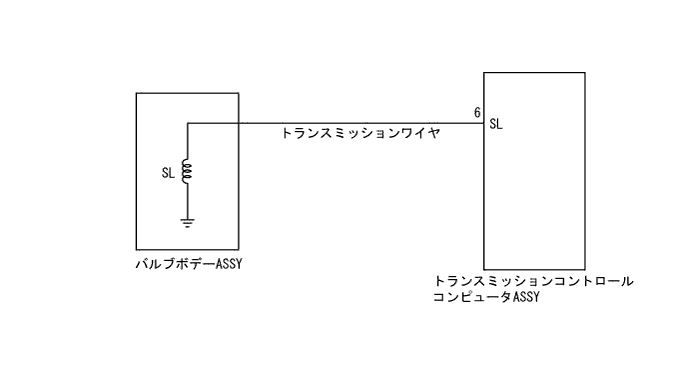
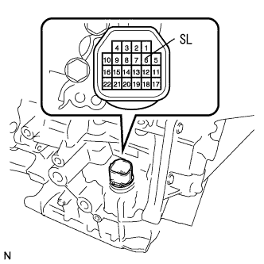

DTC P2769/64 DSU/SL Solenoid Circuit (Low) |
DTC P2770/64 DSU/SL Solenoid Circuit (High) |
| DTC No. SAE/TCCS | DTC Detection Conditions 1. Diagnosis conditions 2. Malfunction status 3. Malfunction duration 4. Other | Inspection Area |
|---|---|---|
| P2769/64 P2770/64 |
|
|

| Step 1 | Inspect Transmission Wire (SL) |
Remove the transmission control computer. (see)
 |
Using SST (Toyota electrical tester), measure the resistance between the terminals.
| Tester Connection (Terminal Symbol) | Condition | Standard |
|---|---|---|
| 6 (SL) - Body ground | 20°C | 11 to 15Ω |
|
| ||||
| OK | |
| Step 2 | Replace Transmission Control Computer Assembly |
Replace the transmission control computer assembly. (see)
| NEXT | ||
| ||
| Step 3 | Inspect Transmission 3-way Solenoid Assembly (ATM) (SL) |
Disconnect the automatic transmission 3 way solenoid assembly (SL) connector.
Using SST (Toyota electrical tester), check the resistance between the terminals.
| Tester Connection (Terminal Symbol) | Condition | Standard |
|---|---|---|
| Terminal 1 - Body ground | 20°C | 11 to 15Ω |
|
| ||||
| OK | ||
| ||